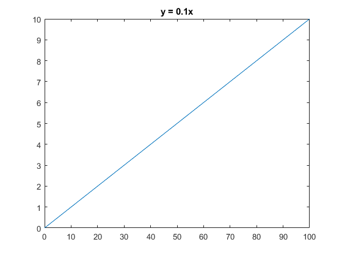
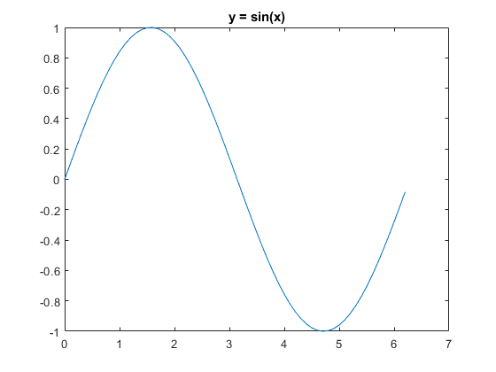
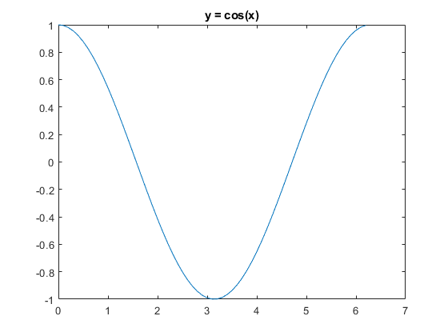
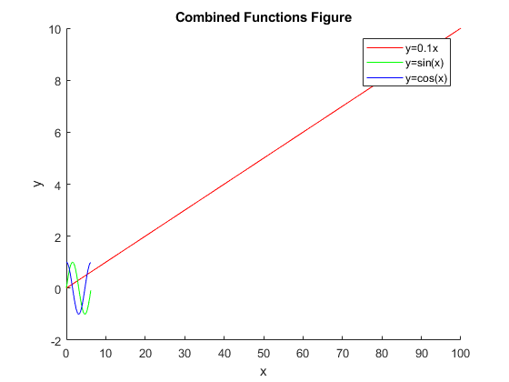
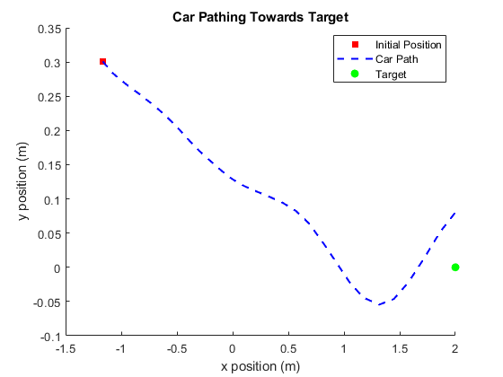

Contents
%ECE8 Lab 1
Exercise 1 %% %Basic matrix and vector operations
%Define all variables for later use, followed with semi-colons so they % don't show up in the terminal. A = [8 1 6; 3 5 7; 4 9 2]; B = [29 44 86; 1 66 37; 84 78 5]; C = [7 3 9; 6 3 5; 7 6 5]; x = [2; 7; 9]; u = [9; 38; 45]; %Execute parts a, b, and c with the defined variables %Part (a) ('Exercise 1') PartA = A*B + C %Part (b) PartB = A*x + B*u %Part (c) PartC = (1/3)*A*(x + u)
ans =
'Exercise 1'
PartA =
744 889 764
686 1011 483
300 932 692
PartB =
5880
4286
4034
PartC =
152.3333
212.0000
185.6667
Exerise 2 %% %Plotting functions through Matlab
% First, define all the variables to use later %Part (a) x1 = 0:2:100; y1 = 0.1*x1; %Part (b) x2 = 0:0.1:2 * pi; y2 = sin(x2); %Part (c) x3 = 0:0.1:2 * pi; y3 = cos(x3); % Now, for the individual plots % I will specify each plot as a seperate figure to have them all show up % seperately figure(1) % First plot, y = 0.1x % plot(x1, y1) title('y = 0.1x') figure(2) % Second plot, y = sin(x) % plot(x2, y2) title('y = sin(x)') figure(3) % Third plot, y = cos(x) % plot(x3, y3) title('y = cos(x)') % Now for the combined plot with all functions % figure(4) hold on plot(x1, y1, 'r', 'DisplayName', 'y=0.1x') %I put some labeling on each plot(x2, y2, 'g', 'DisplayName', 'y=sin(x)') %line to make it more readable plot(x3, y3, 'b', 'DisplayName', 'y=cos(x)') hold off title('Combined Functions Figure') %Label everything and xlabel('x') %create a legend ylabel('y') legend




Exercise 3 %% %Plotting car path from Initial Position to Target
load('Lab1_Exercise3.mat') %First load the data figure(5) hold on %Prepare the figure % Initial Location Marker plot(xv(1), yv(1), ... 'Color', 'r', ... 'Marker', 's', ... 'MarkerFaceColor', 'r', ... 'LineStyle', 'none', ... 'DisplayName', 'Initial Position'); % a lot to read, but basically takes the first piece of data for x and y, plots a marker as a red square, and labels it as "Initial Position" % Plotting Car Path plot(xv, yv, ... 'Color', 'b', ... 'LineStyle', '--', ... 'LineWidth', 1.5, ... 'DisplayName', 'Car Path'); % Similar story. Creates a blue dashed line for the car's path, makes it a certain width, and labels it as "Car Path" % Plotting End Marker plot(2, 0, ... 'Color', 'g', ... 'Marker', 'o', ... 'MarkerFaceColor', 'g', ... 'LineStyle', 'none', ... 'DisplayName', 'Target'); % Almost Identical to the initial location marker, but we make it a green circle and call it "Target" % Labels xlabel('x position (m)') %Label all the axis and legend to make everything more readable ylabel('y position (m)') title('Car Pathing Towards Target') legend('Location', 'best') hold off
